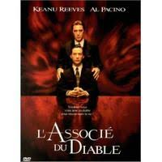
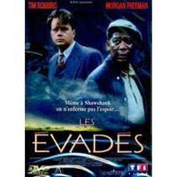
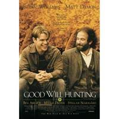

Après avoir travaillé 2 ans dans un organisme de formation en tant que commercial, je suis parti en Nouvelle Zélande où j'ai voyagé et travaillé. A mon retour, plusieurs amis m'ont parlé du Wagon et j'ai décidé d'apprendre à coder
.
|  | Associe du diableKevin Lomax, jeune et brillant avocat de Floride, va perdre ses illusions quand un grand cabinet de New York va l'approcher et lui confier des affaires. Le patron, Milton, s'intéresse à lui et lui confie les plus gros dossiers. |
|  | Les EvadesEn 1947, Andy Dufresne, un jeune banquier, est condamné à la prison à vie pour le meurtre de sa femme et de son amant. Ayant beau clamer son innocence, il est emprisonné à Shawshank, le pénitencier le plus sévère de l'Etat du Maine. Il y fait la rencontre de Red, un Noir désabusé, détenu depuis vingt ans. Commence ... |
|  | Good Will HuntingWill Hunting est un authentique génie mais également un rebelle aux élans imprévisibles. Il est né dans le quartier populaire de South Boston et a arrêté très tôt ses études, refusant le brillant avenir que pouvait lui procurer son intelligence. Il vit désormais entouré d'une bande de copains et ... |
This page has been coded during the FullStack program @LeWagon.